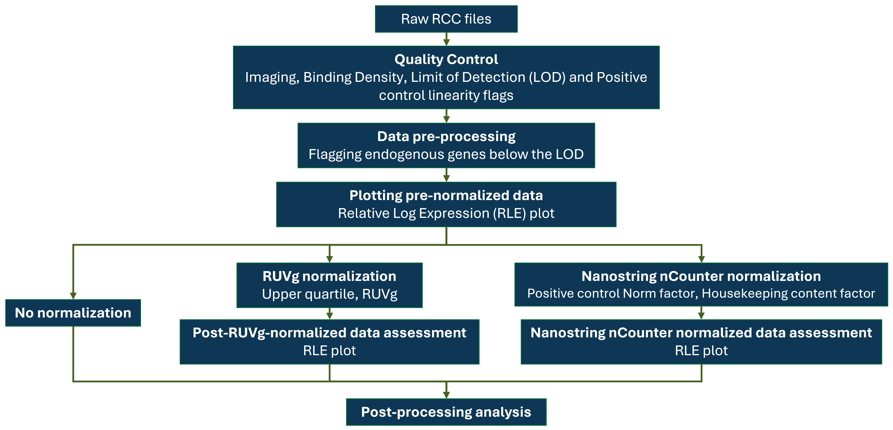
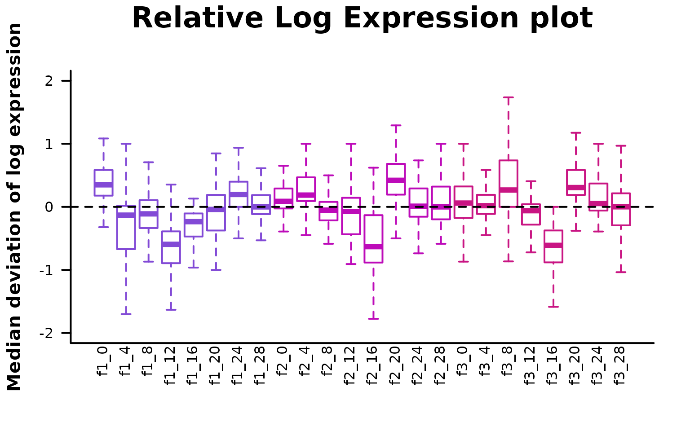
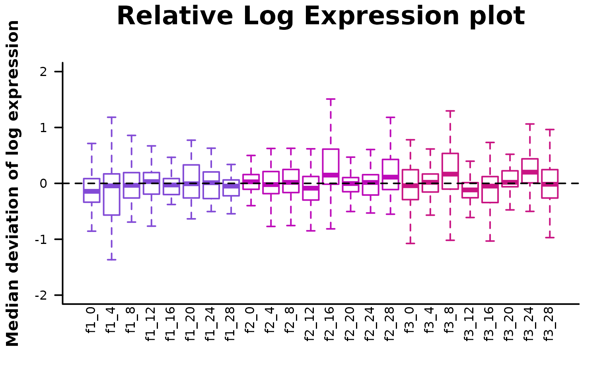
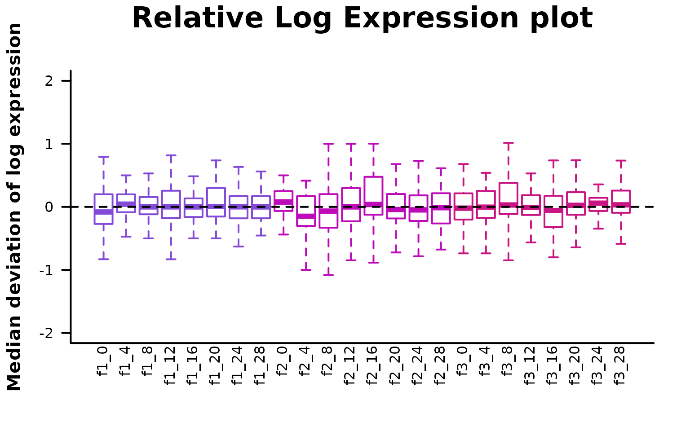
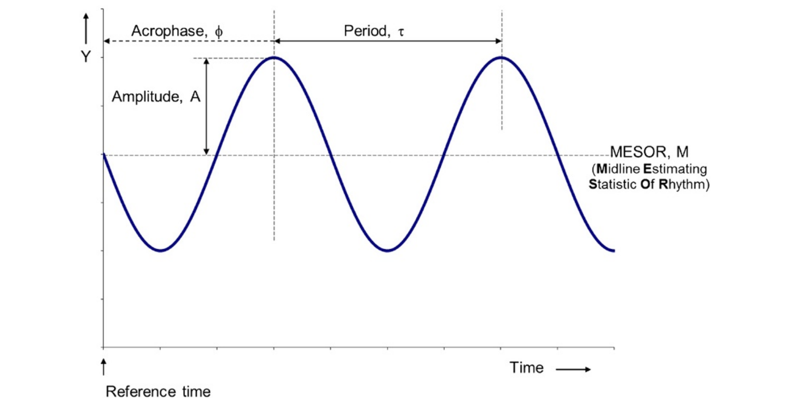
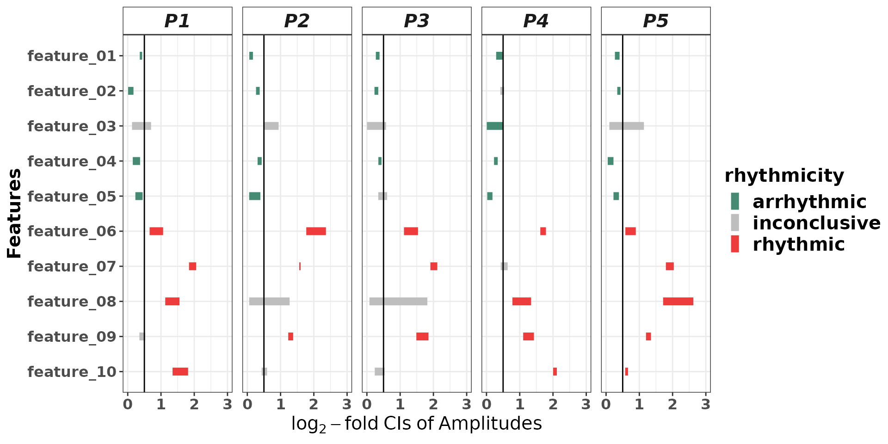

Using rhythmCI: A Quick Guide
Jayanth Sreekanth
15 October 2026
Source:vignettes/rhythmCI.Rmd
rhythmCI.RmdIntroduction
Understanding rhythmic patterns is essential for uncovering time-dependent biological processes. However, analyzing rhythmicity in gene expression datasets can be complex, involving normalization, statistical modeling, and careful visualization.
The rhythmCI package is designed to simplify these
steps. It provides a streamlined workflow to:
- Load and normalize Nanostring nCounter data
- Perform rhythm analysis using the Harmonic Regression method
- Estimate confidence intervals for amplitude
- Generate informative visualizations
This vignette introduces the core functions of rhythmCI
and demonstrates how to use them on a typical time-series Nanostring
nCounter dataset. By the end of this guide, you will be able to perform
a complete rhythm analysis from raw data to visualization.
While designed for gene expression data, the functions for rhythm analysis, confidence interval estimation, and visualization are broadly applicable and can be used with other types of biological data, including proteomics.
Normalization and RLE plot
Introduction
NanoString nCounter system produces RCC files (nCounter data files)
containing counts for each gene measured in the gene expression assays.
To ensure reliability and preciseness in the downstream statistical
analysis, proper normalization of nCounter data against reference
controls is of utmost importance. The fact that one normalization method
is not always suitable for all datasets, the flexibility to choose
‘none’ or ‘nSolver’ [1]
or ‘RUVg’ [2] [3] normalization is available in this package.
Specific steps are described in the form of a flow diagram below:

For more detailed information concerning NanoString nCounter experiment, please refer to https://university.nanostring.com/gene-expression-data-analysis-guidelines
Loading and normalizing Nanostring nCounter gene expression data
We demonstrate the normalization step using a publicly available circadian dataset from Gene Expression Omnibus (GEO) [4].
As part of quality control, genes in the samples that are below the
Limit Of Detection (LOD) needs to be checked. For which, we recommend to
follow the ‘No normalization’ steps below. The
‘df1_lodmatrix’ will have a TRUE value in the matrix when a
gene is below the LOD. Those genes that are below the LOD need to be
filtered using any of your preferred choice. After which, the data can
be RUVg normalized using the function normalizeruvg.
nSolver normalization is not available in this case. If none of the
genes are below the LOD, then you have the choice of using both
normalization methods using loadnormalizercc function.
Since RUVg normalization uses Housekeeping genes, the user needs to ensure that the Housekeeping genes are consistent and are not associated with any biology of interest. To understand more about defining a k-value, we recommend this article [5].
# Path to the sample data that is included within the package
path_to_rcc <- system.file("extdata", "GSE146530", package = "rhythmCI")
meta <- system.file("extdata", "meta_GSE146530.csv", package = "rhythmCI")
# No normalization -----------------------------------------------------------------
exp_df1 <- loadnormalizercc(dir = path_to_rcc, meta_dir = meta,
file_number = FALSE,
hkgenes = c("LOC106606270", "LOC106600007"))
df1_raw <- exp_df1$rawdata
head(df1_raw)
#> f1_0 f1_4 f1_8 f1_12 f1_16 f1_20 f1_24 f1_28 f2_0 f2_4 f2_8 f2_12
#> LOC106565112 38 20 22 12 10 19 18 18 24 17 16 18
#> LOC106561455 130 151 137 82 96 125 135 129 115 167 136 121
#> kc1e 568 426 480 313 363 348 515 461 479 528 446 331
#> clock 266 234 247 189 205 206 310 275 236 323 208 223
#> per2 46 45 30 12 37 33 48 32 45 41 46 30
#> ciart 151 65 76 69 80 137 82 85 117 140 79 128
#> f2_16 f2_20 f2_24 f2_28 f3_0 f3_4 f3_8 f3_12 f3_16 f3_20 f3_24
#> LOC106565112 13 26 21 17 15 23 30 23 14 22 31
#> LOC106561455 83 164 117 105 118 110 133 147 82 157 118
#> kc1e 258 614 431 419 541 415 459 382 297 521 472
#> clock 123 341 202 214 251 242 208 239 168 305 232
#> per2 13 56 65 44 49 54 67 54 34 40 27
#> ciart 87 146 71 64 90 81 148 114 49 173 100
#> f3_28
#> LOC106565112 26
#> LOC106561455 142
#> kc1e 492
#> clock 237
#> per2 56
#> ciart 84
df1_pdata <- exp_df1$pData
head(df1_pdata)
#> BCAC_ID RCC_file_name Owner
#> f1_0 NA GSM4391698_20190109_AW_SET_N_280_AW_SET_N_280_10.RCC
#> f1_4 NA GSM4391701_20190110_AW_SET_O_280_AW_SET_O_280_01.RCC
#> f1_8 NA GSM4391704_20190110_AW_SET_O_280_AW_SET_O_280_04.RCC
#> f1_12 NA GSM4391707_20190110_AW_SET_O_280_AW_SET_O_280_07.RCC
#> f1_16 NA GSM4391710_20190110_AW_SET_O_280_AW_SET_O_280_10.RCC
#> f1_20 NA GSM4391713_20190110_AW_SET_P_280_AW_SET_P_280_01.RCC
#> Comments Date GeneRLF SystemAPF imagingQC bindingDensityQC
#> f1_0 20190109 Salmo_Circ_1_C6885 n6_vDV1 No flag No flag
#> f1_4 20190110 Salmo_Circ_1_C6885 n6_vDV1 No flag No flag
#> f1_8 20190110 Salmo_Circ_1_C6885 n6_vDV1 No flag No flag
#> f1_12 20190110 Salmo_Circ_1_C6885 n6_vDV1 No flag No flag
#> f1_16 20190110 Salmo_Circ_1_C6885 n6_vDV1 No flag No flag
#> f1_20 20190110 Salmo_Circ_1_C6885 n6_vDV1 No flag No flag
#> limitOfDetectionQC positiveLinearityQC id time ext_time group
#> f1_0 No flag No flag f1 0 8 group1
#> f1_4 No flag No flag f1 4 12 group1
#> f1_8 No flag No flag f1 8 16 group1
#> f1_12 No flag No flag f1 12 20 group1
#> f1_16 No flag No flag f1 16 0 group1
#> f1_20 No flag No flag f1 20 4 group1
df1_fdata <- exp_df1$fData
head(df1_fdata)
#> Gene Class
#> LOC106565112 LOC106565112 Endogenous
#> LOC106561455 LOC106561455 Endogenous
#> kc1e kc1e Endogenous
#> clock clock Endogenous
#> per2 per2 Endogenous
#> ciart ciart Endogenous
df1_endblod <- exp_df1$num_endogenous_blod
head(df1_endblod)
#> f1_0 f1_4 f1_8 f1_12 f1_16 f1_20
#> 0 2 1 3 1 0
df1_lodmatrix <- exp_df1$lod_matrix
head(df1_lodmatrix)
#> f1_0 f1_4 f1_8 f1_12 f1_16 f1_20 f1_24 f1_28 f2_0 f2_4 f2_8
#> LOC106565112 FALSE FALSE FALSE FALSE FALSE FALSE FALSE FALSE FALSE FALSE FALSE
#> LOC106561455 FALSE FALSE FALSE FALSE FALSE FALSE FALSE FALSE FALSE FALSE FALSE
#> kc1e FALSE FALSE FALSE FALSE FALSE FALSE FALSE FALSE FALSE FALSE FALSE
#> clock FALSE FALSE FALSE FALSE FALSE FALSE FALSE FALSE FALSE FALSE FALSE
#> per2 FALSE FALSE FALSE FALSE FALSE FALSE FALSE FALSE FALSE FALSE FALSE
#> ciart FALSE FALSE FALSE FALSE FALSE FALSE FALSE FALSE FALSE FALSE FALSE
#> f2_12 f2_16 f2_20 f2_24 f2_28 f3_0 f3_4 f3_8 f3_12 f3_16 f3_20
#> LOC106565112 FALSE FALSE FALSE FALSE FALSE FALSE FALSE FALSE FALSE FALSE FALSE
#> LOC106561455 FALSE FALSE FALSE FALSE FALSE FALSE FALSE FALSE FALSE FALSE FALSE
#> kc1e FALSE FALSE FALSE FALSE FALSE FALSE FALSE FALSE FALSE FALSE FALSE
#> clock FALSE FALSE FALSE FALSE FALSE FALSE FALSE FALSE FALSE FALSE FALSE
#> per2 FALSE FALSE FALSE FALSE FALSE FALSE FALSE FALSE FALSE FALSE FALSE
#> ciart FALSE FALSE FALSE FALSE FALSE FALSE FALSE FALSE FALSE FALSE FALSE
#> f3_24 f3_28
#> LOC106565112 FALSE FALSE
#> LOC106561455 FALSE FALSE
#> kc1e FALSE FALSE
#> clock FALSE FALSE
#> per2 FALSE FALSE
#> ciart FALSE FALSE
# nSolver normalization ------------------------------------------------------------
exp_df2 <- loadnormalizercc(dir = path_to_rcc, meta_dir = meta,
file_number = FALSE,
normalization = "nSolver",
hkgenes = c("LOC106606270", "LOC106600007"),
phenoDataRccColName = 'files.RCC')
df2_nsolverexpset <- exp_df2$nsolverexpset
df2_nsolvernormlog2 <- exp_df2$nsolvernormlog2
head(df2_nsolvernormlog2)
#> f1_0 f1_4 f1_8 f1_12 f1_16 f1_20 f1_24
#> LOC106565112 4.784551 4.512565 4.608803 4.322881 3.689950 4.416651 4.027035
#> LOC106561455 6.532571 7.368175 7.193765 6.997481 6.830431 7.072003 6.866571
#> kc1e 8.651433 8.858340 8.995134 8.917062 8.738313 8.541806 8.790335
#> clock 7.559844 7.996765 8.039437 8.192297 7.917019 7.788210 8.059879
#> per2 5.053737 5.643810 5.039437 4.322881 5.478446 5.182186 5.393818
#> ciart 6.747076 6.164642 6.352027 6.751724 6.570369 7.203248 6.154147
#> f1_28 f2_0 f2_4 f2_8 f2_12 f2_16 f2_20
#> LOC106565112 4.190486 4.575716 3.934287 4.206934 4.240768 4.611294 4.317589
#> LOC106561455 6.964926 6.789840 7.156680 7.217503 6.923578 7.196256 6.929024
#> kc1e 8.794308 8.838750 8.811486 8.923602 8.367880 8.820747 8.827144
#> clock 8.051083 7.820603 8.104212 7.826830 7.800196 7.758135 7.980554
#> per2 4.986953 5.455421 5.156680 5.674060 4.947037 4.611294 5.395591
#> ciart 6.368823 6.814503 6.903914 6.441399 7.004068 7.263370 6.762374
#> f2_24 f2_28 f3_0 f3_4 f3_8 f3_12 f3_16
#> LOC106565112 4.446299 4.288301 3.882652 4.588079 4.827917 4.558136 4.419483
#> LOC106561455 6.869510 6.846296 6.777470 6.797532 6.939810 7.182627 6.887632
#> kc1e 8.741755 8.832621 8.964801 8.703556 8.719211 8.554374 8.731761
#> clock 7.652203 7.866568 7.859932 7.927929 7.581080 7.880064 7.913472
#> per2 6.031261 5.610229 5.526508 5.784476 5.961184 5.754533 5.641876
#> ciart 6.156792 6.140743 6.390447 6.360668 7.092889 6.818663 6.156449
#> f3_20 f3_24 f3_28
#> LOC106565112 4.247908 5.116559 4.741933
#> LOC106561455 7.028127 7.011377 7.146916
#> kc1e 8.752252 9.002256 8.932489
#> clock 7.981734 7.980745 7.881863
#> per2 5.081898 4.923914 5.819935
#> ciart 7.167290 6.774771 6.396436
df2_pdata <- exp_df2$pData
df2_fdata <- exp_df2$fData
df2_endblod <- exp_df2$num_endogenous_blod
# RUVg normalization ---------------------------------------------------------------
exp_df3 <- loadnormalizercc(dir = path_to_rcc, meta_dir = meta,
file_number = FALSE,
normalization = "RUVg",
hkgenes = c("LOC106606270", "LOC106600007"), k=3)
df3_set <- exp_df3$set
df3_vsd <- exp_df3$vsd
df3_ruvgnormlog2 <- exp_df3$ruvgnormlog2
head(df3_ruvgnormlog2)
#> f1_0 f1_4 f1_8 f1_12 f1_16 f1_20 f1_24
#> LOC106565112 4.754888 4.459432 4.459432 4.169925 3.700440 4.459432 3.906891
#> LOC106561455 6.584963 7.330917 7.149747 6.930737 6.894818 7.098032 6.857981
#> kc1e 8.703904 8.823367 8.879583 8.900867 8.891784 8.672425 8.741467
#> clock 7.531381 7.888743 7.965784 8.194757 7.960002 7.832890 8.022368
#> per2 5.044394 5.523562 4.954196 4.169925 5.459432 5.129283 5.357552
#> ciart 6.820179 6.569856 6.614710 6.727920 6.375039 7.022368 6.266787
#> f1_28 f2_0 f2_4 f2_8 f2_12 f2_16 f2_20
#> LOC106565112 4.169925 4.584963 3.807355 4.000000 4.321928 4.392317 4.247928
#> LOC106561455 7.011227 6.906891 7.159871 7.129283 6.988685 7.087463 6.845490
#> kc1e 8.839204 8.977280 8.724514 8.864186 8.519636 8.689998 8.813781
#> clock 8.049849 7.864186 8.087463 7.845490 7.845490 7.754888 7.977280
#> per2 4.954196 5.491853 5.169925 5.643856 4.906891 4.523562 5.321928
#> ciart 6.357552 6.629357 6.942515 6.303781 6.807355 7.257388 6.768184
#> f2_24 f2_28 f3_0 f3_4 f3_8 f3_12 f3_16
#> LOC106565112 4.321928 4.169925 3.906891 4.459432 4.700440 4.754888 4.321928
#> LOC106561455 6.857981 6.857981 6.741467 6.714246 6.977280 7.199672 6.882643
#> kc1e 8.703904 8.804131 8.974415 8.581201 8.682995 8.764872 8.731319
#> clock 7.658211 7.918863 7.845490 7.870365 7.614710 7.942515 7.870365
#> per2 6.044394 5.643856 5.459432 5.727920 6.022368 5.643856 5.584963
#> ciart 6.087463 5.930737 6.442943 6.539159 6.930737 6.569856 6.285402
#> f3_20 f3_24 f3_28
#> LOC106565112 4.169925 4.906891 4.700440
#> LOC106561455 7.118941 7.066089 6.918863
#> kc1e 8.778077 8.921841 8.800900
#> clock 7.994353 8.016808 7.794416
#> per2 5.129283 5.000000 5.643856
#> ciart 7.098032 6.599913 6.700440
df3_pdata <- exp_df3$pData
df3_fdata <- exp_df3$fData
df3_endblod <- exp_df3$num_endogenous_blod
# When the data has been loaded, quality-checked and is ready to be normalized -----
exp_df3 <- normalizeruvg(rawdata = df1_raw,
fData = df1_fdata,
pData = df1_pdata,
hkgenes = c("LOC106606270", "LOC106600007"),
exclude = NULL,
k=3)
df3_set <- exp_df3$set
df3_vsd <- exp_df3$vsd
df3_ruvgnormlog2 <- exp_df3$ruvgnormlog2RLE plots
The Relative Log Expression (RLE) plot [6] can be created for a raw expression gene matrix or a log2 transformed matrix of normalized genes.
# Log2 transformed raw values before normalization
# Rows 1 to 55 correspond to the genes measured
create_RLEplot(log2(df1_raw[1:54,]), ylim = c(-2,2))
# Log2 transformed values after nsolver normalization
create_RLEplot(df2_nsolvernormlog2[1:54,], ylim = c(-2,2))
# Log2 transformed values after RUVg normalization
create_RLEplot(df3_ruvgnormlog2[1:54,], ylim = c(-2,2))
Rhythmicity characterization
Introduction
A well-known parametric method of detecting rhythmicity is by fitting
a regression line in terms of cosine functions also termed as harmonic
regression method [7]. By employing the
least squares method, the harmonic regression model uses three
parameters to describe rhythms as depicted in the image below: phase
(the time of the curve’s peak), amplitude (half-length of the difference
between the peak and trough) and magnitude (mean value of the
time-series, also called as mesor). Whereas the period (length of time
for one cycle) is fixed and chosen based on the organism.

The model can be expressed as:
where the amplitude and phase are calculated from and as:
Therefore, is the baseline expression level and is the period.
Gunnar Lachmann et al. extended this method to evaluate the
rhythmicity of genes or components. Their approach combines amplitude
estimation from the regression fit with bootstrapping to assess
rhythmicity. Our implementation of rhythmicity detection adopts a
similar strategy, with adaptations tailored to the current workflow. For
detailed information, check the documentation of the function
?rhythmicity or the article[8].
Detecting rhythmic components
In this example, we use synthetic data generated using Simphony [9] to illustrate the function.
# Load the data as part of the package
data(simdf)
head(simdf)
#> feature_01 feature_02 feature_03 feature_04 feature_05 feature_06
#> P1_0 10.26562 10.52552 5.459432 9.590587 8.098032 6.942515
#> P1_4 10.64926 10.60918 5.357552 9.749869 8.392317 7.900867
#> P1_8 10.65284 10.61747 5.930737 9.911392 8.438792 7.888743
#> P1_12 10.31061 10.38046 5.169925 9.656425 8.108524 7.219169
#> P1_16 9.94398 10.43567 5.044394 9.475733 7.832890 6.209453
#> P1_20 9.97298 10.48382 4.857981 9.330917 7.781360 6.554589
#> feature_07 feature_08 feature_09 feature_10
#> P1_0 8.807355 4.459432 8.129283 8.679480
#> P1_4 10.578373 5.643856 8.607330 9.964341
#> P1_8 10.572700 5.129283 8.710806 10.011227
#> P1_12 8.900867 4.247928 8.209453 8.791163
#> P1_16 7.066089 2.807355 7.960002 6.977280
#> P1_20 7.276124 3.321928 7.851749 7.434628
output_hr <- rhythmicity(input = simdf,
operation = "matrix",
seed = 7,
tau = 24, #value in general for humans
num_boot = 3999,
alpha = 0.05,
fc_cutoff = 0.5)
head(output_hr$P1)
#> ci.lower ci.upper rhythmicity hr.mesor hr.amplitude hr.phase
#> feature_01 0.362 0.434 arrhythmic 10.304 0.400 1.574
#> feature_02 0.012 0.173 arrhythmic 10.499 0.096 1.186
#> feature_03 0.129 0.702 inconclusive 5.283 0.406 1.747
#> feature_04 0.152 0.371 arrhythmic 9.639 0.249 1.702
#> feature_05 0.230 0.449 arrhythmic 8.086 0.357 1.756
#> feature_06 0.658 1.064 rhythmic 7.122 0.874 1.603Visualization of rhythmicity results
In this example, we use the output of the rhythmicity function and apply additional data transformations so that the results can be visualized.
# Loading required packages
library(dplyr)
library(tidyverse)
library(ggplot2)
# Combining the data frames in the list into a single data frame
tbl_final <- do.call(rbind, output_hr)
# Creating a column denoting patients and features
tbl_final[,'patient'] <- stringr::str_split(rownames(tbl_final),
pattern = '\\.', simplify = TRUE)[, 1]
tbl_final[,'features'] <- stringr::str_split(rownames(tbl_final),
pattern = '\\.', simplify = TRUE)[, 2]
rownames(tbl_final) <- NULL
# Setting Variable Types
tbl_final <- tbl_final %>% mutate(rhythmicity = as.factor(rhythmicity),
features = as.factor(features))
# Creating a primary data frame for the images
simdf_img <- as.data.frame(t(simdf))
# Creating a "Gene" column with row name entries
simdf_img <- simdf_img %>% mutate(Gene = row.names(simdf_img))
head(simdf_img)
#> P1_0 P1_4 P1_8 P1_12 P1_16 P1_20
#> feature_01 10.265615 10.649256 10.652845 10.310613 9.943980 9.972980
#> feature_02 10.525521 10.609179 10.617467 10.380461 10.435670 10.483816
#> feature_03 5.459432 5.357552 5.930737 5.169925 5.044394 4.857981
#> feature_04 9.590587 9.749869 9.911392 9.656425 9.475733 9.330917
#> feature_05 8.098032 8.392317 8.438792 8.108524 7.832890 7.781360
#> feature_06 6.942515 7.900867 7.888743 7.219169 6.209453 6.554589
#> P1_24 P2_0 P2_4 P2_8 P2_12 P2_16
#> feature_01 10.330917 10.298063 10.395534 10.379378 10.337622 10.134426
#> feature_02 10.477758 10.504819 10.749031 10.787903 10.422065 10.153552
#> feature_03 5.087463 5.426265 5.554589 5.807355 4.906891 4.392317
#> feature_04 9.727920 9.645658 9.879583 10.005625 9.603626 9.312883
#> feature_05 7.882643 8.169925 8.179909 8.330917 8.194757 7.774787
#> feature_06 7.108524 7.499846 8.768184 8.857981 7.179909 5.321928
#> P2_20 P2_24 P3_0 P3_4 P3_8 P3_12
#> feature_01 10.239599 10.354249 10.326429 10.533330 10.649256 10.317413
#> feature_02 10.292322 10.532356 10.424166 10.695228 10.688250 10.414685
#> feature_03 4.584963 5.209453 4.523562 5.426265 5.209453 5.044394
#> feature_04 9.296916 9.541097 9.658211 10.020980 9.970106 9.651052
#> feature_05 7.977280 8.308339 8.262095 8.479780 8.679480 8.055282
#> feature_06 5.169925 7.159871 6.768184 8.228819 8.317413 7.276124
#> P3_16 P3_20 P3_24 P4_0 P4_4 P4_8
#> feature_01 10.004220 10.060696 10.263269 10.306062 10.622052 10.540128
#> feature_02 10.228819 10.169925 10.522582 10.440869 10.907642 10.902375
#> feature_03 5.247928 5.044394 4.807355 5.000000 5.614710 5.357552
#> feature_04 9.271463 9.364135 9.629357 9.643856 9.899357 9.881114
#> feature_05 7.857981 7.651052 8.098032 8.189825 8.238405 8.129283
#> feature_06 6.000000 6.066089 7.149747 7.276124 8.643856 8.611025
#> P4_12 P4_16 P4_20 P4_24 P5_0 P5_4
#> feature_01 10.382624 9.965784 9.856426 10.314017 10.314017 10.540128
#> feature_02 10.410451 10.038919 10.121534 10.463524 10.522582 10.888743
#> feature_03 5.392317 5.285402 5.000000 5.523562 5.392317 5.832890
#> feature_04 9.658211 9.453271 9.339850 9.659996 9.605480 9.746514
#> feature_05 8.060696 8.098032 7.994353 8.199672 8.113742 8.438792
#> feature_06 7.129283 5.614710 5.727920 7.375039 6.918863 7.787903
#> P5_8 P5_12 P5_16 P5_20 P5_24 Gene
#> feature_01 10.639341 10.288866 10.078151 9.930737 10.314017 feature_01
#> feature_02 10.863412 10.474720 10.166163 10.257388 10.517669 feature_02
#> feature_03 5.781360 5.285402 5.491853 4.321928 5.087463 feature_03
#> feature_04 9.763212 9.519636 9.449149 9.622052 9.640245 feature_04
#> feature_05 8.233620 8.071462 7.754888 7.894818 8.252665 feature_05
#> feature_06 7.912889 7.199672 6.754888 6.442943 7.189825 feature_06
# Transforming the dataframe from wide to long format
simdf_img <- gather(simdf_img, Patient, Expression, -Gene)
# Creating a column for Time and Patient
simdf_img$Time <- stringr::str_split(simdf_img$Patient ,
pattern = '\\_', simplify = TRUE)[,2]
simdf_img$Patient <- stringr::str_split(simdf_img$Patient ,
pattern = '\\_', simplify = TRUE)[,1]
# Ordering the entries
simdf_img <- simdf_img[order(simdf_img$Gene, as.integer(simdf_img$Time)), ]
rownames(simdf_img) <- NULL
# Joining to have other necessary variables
simdf_img_1 <- full_join(simdf_img, tbl_final,
by = c('Patient' = 'patient','Gene' = 'features'),
keep = F)
# Creating a plot to show Gene expression levels across time for each patient (columns) and gene (rows).
# The fitted regression curves are overlaid and colored according to the rhythmicity status.
ggplot(simdf_img_1,
aes(x=as.integer(Time), y=as.double(Expression), color=rhythmicity, group = rhythmicity)) +
geom_point(size = 0.3) +
geom_smooth(formula = 'y~x', method = "loess", linewidth=1.3, se=FALSE, span=0.75) +
facet_grid(Gene~Patient, scales = "free_y") +
theme_bw(base_size = 12) +
scale_color_manual(values = c('aquamarine3','grey','brown2'),
labels = c('arrhythmic','inconclusive','rhythmic')) +
theme(axis.text = element_text(size=12, face = 'bold'),
axis.title = element_text(size=15, face = 'bold'),
strip.background = element_rect(fill = 'white'),
strip.text = element_text(size = 15, face = 'bold.italic'),
panel.spacing = unit(8, "pt"), legend.margin = margin(t=-5),
legend.text = element_text(size=15, face = 'bold'),
legend.title = element_text(size=15, face = 'bold')) +
xlab("Time") + ylab("Log2 expression")
# Creating a plot to display the Confidence Interval of amplitude estimates
ggplot(tbl_final, aes(color=rhythmicity)) +
geom_linerange(aes(ymin = ci.lower, ymax = ci.upper, x=fct_rev(features)),
linewidth = 3) +
facet_wrap(~patient, ncol = 5) +
coord_flip() +
# make sure to change the value of yintercept based on cutoff defined
geom_hline(yintercept=0.5,color = "black", linewidth= 0.5) +
scale_y_continuous(breaks = c(0,1,2,3), limits = c(0,3)) +
scale_color_manual(values = c('aquamarine4','grey','brown2')) +
xlab('Features') + ylab (expression(log[2]-fold~CIs~of~Amplitudes)) +
theme_bw() +
theme(axis.text = element_text(size=12, face = 'bold'),
axis.title = element_text(size=15, face = 'bold'),
strip.background = element_rect(fill = 'white'),
strip.text = element_text(size = 15, face = 'bold.italic'),
panel.spacing = unit(8, "pt"), legend.margin = margin(t=-5),
legend.text = element_text(size=15, face = 'bold'),
legend.title = element_text(size=15, face = 'bold'))